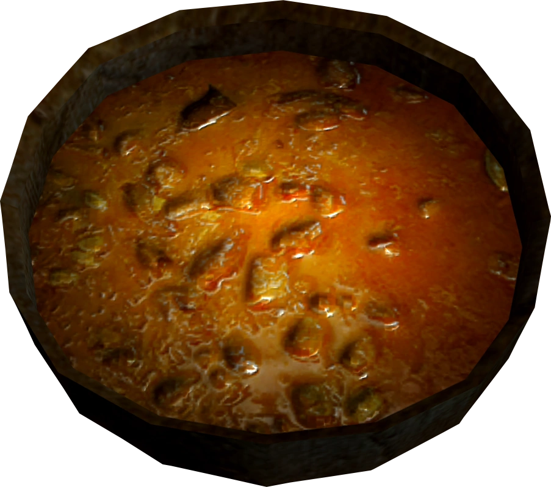

Venison Stew

Description
This rich and filling stew is a staple among Skyrim’s hunters. Packed with
protein and warmth — perfect after trekking through the snowy tundra.
Ingredients
- 1 lb venison (cubed)
- 1 tablespoon oil or butter
- 1 potato (diced)
- 1 carrot (sliced)
- 1 onion (chopped)
- 2 cups beef broth
- 1 teaspoon thyme
- Salt and pepper to taste
Steps
- Heat oil in a pot and brown the venison pieces.
- Add onion, cook until soft.
- Add potatoes and carrots, stir for a few minutes.
- Pour in beef broth, add thyme, salt, and pepper.
- Bring to a boil, then reduce to low heat and cover.
- Simmer for 1–1.5 hours until meat is tender and flavors meld.
Back to Skyrim Recipes